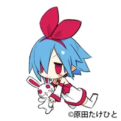
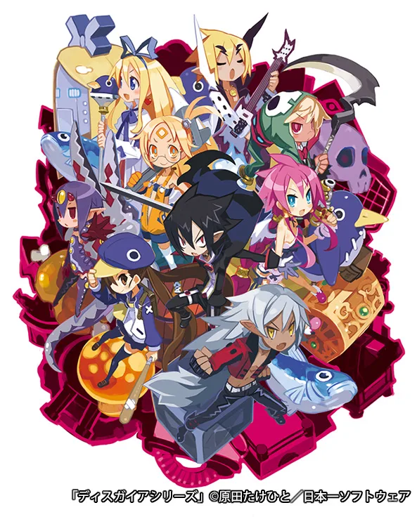
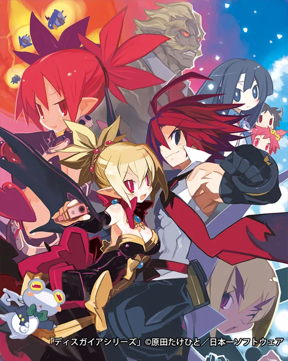
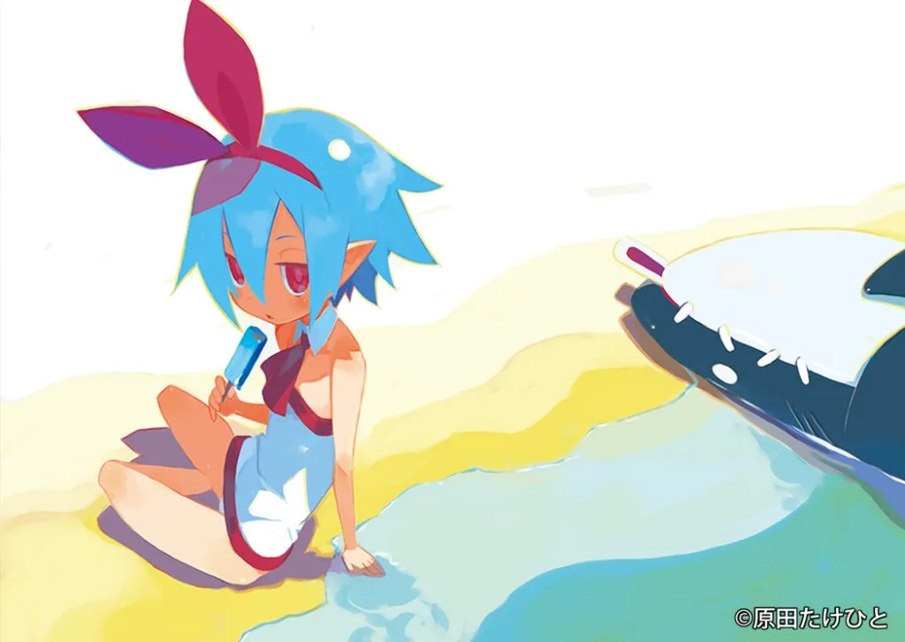
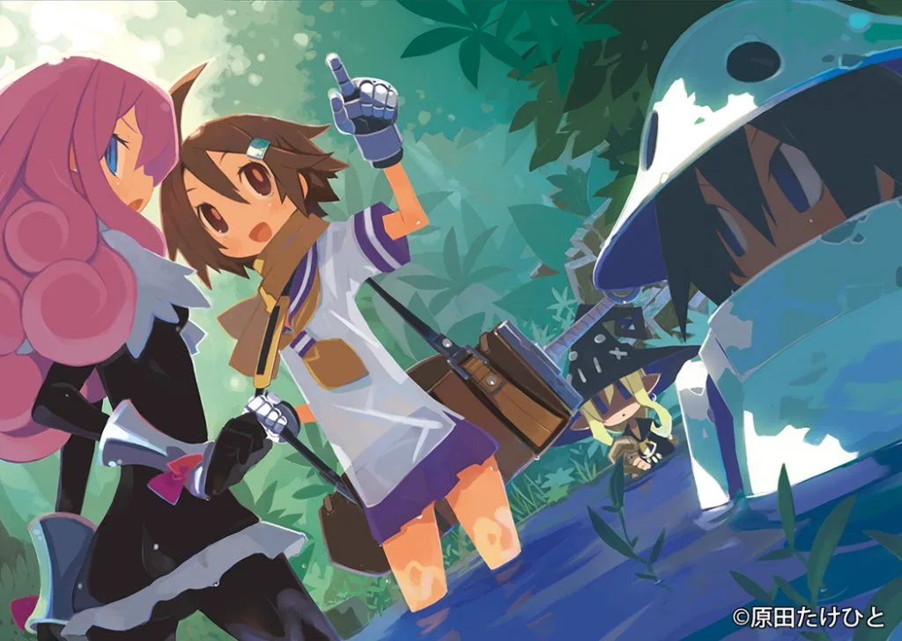
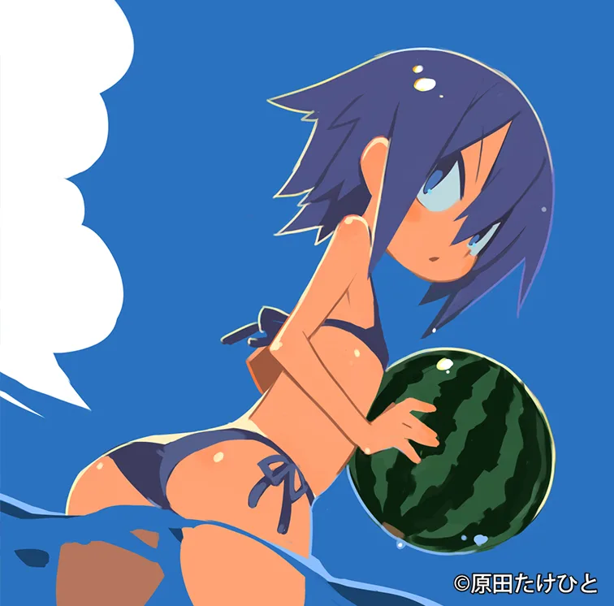

HOPE TALK
第一線で活躍するクリエイターたちは、一体どのようにして自身のキャリアを切り拓いてきたのでしょうか？
現役のクリエイターたちを招き、彼らを「印刷会社」という立場から支えるホープツーワンの熟練社員、出口竜がその秘密に迫る対談企画「ホープトーク」。
今回のゲストは、イラストレーター・キャラクターデザイナーとして活躍する原田たけひとさんです。
キャラクターデザインを担当した代表作『魔界戦記ディスガイアシリーズ』は、全世界で出荷数累計300万本を突破する人気を誇っています。会社員を経てフリーのイラストレーター・キャラクターデザイナーとなった原田さんの作品にかける想い、そしてキャリアの築き方について、出口が迫ります。

原田たけひと京都精華大学中退後、元日本一ソフトウェアの社員を経てフリーに。退社後も日本一ソフトウェアの作品に関わり続けている。
全世界累計300万本を誇る「魔界戦記ディスガイアシリーズ」に代表されるゲームのキャラクターデザインの他、「ダブルブリッド（3巻以降）」などのノベルの挿絵、アニメ「絶滅危愚少女 Amazing Twins（OVA）」のキャラクター原案など。
出口竜
本社工場勤務。入社二十云年。製本を経験してから印刷へ。主に表紙多色刷を担当し、その後製版も学ぶ。
目次
・ゲームの世界に憧れ、イラストレーターに
・大学在学中にプロデビュー？就職を選びゲームの世界へ。
・見る人に親近感を生み出す、原田たけひとのこだわりとは？
・出し惜しみせずにとにかく発表し続けること
・まとめ
ゲームの世界に憧れ、イラストレーターに
▲勇者日向 表紙
―原田さんは、いつ頃からイラストレーターやキャラクターデザイナーになろうと考えたのでしょうか？
「絵を描くこと自体は昔から好きでしたね。高校生になるぐらいにはマルチペイントというグラフィックソフトで16色の絵を描いたりしていました。イラストレーターになろうとまじめに思ったのは、高校後の進路を決める頃だったと思います」
―絵描きといってもさまざまなジャンルがあると思うのですが、その当時から描きたいジャンルは決まっていたのですか？
「高校生だった当時は、ゲームのビジュアルも発達し、どんどん新しいものがでてきて興味津々でした。カプコンの格闘ゲームなんかは新しい絵がでてくるたびに大興奮でしたね。なので、ゲーム関係の絵を描きたいというのはありましたね」
―なるほど、それで高校を卒業して京都精華大学に入学されていますね
「当時はゲーム会社に就職したらゲームの絵を描けるだろうという考えがあったんです。絵を学べる大学に入学して就職するという流れで考えていました」
―京都精華大学を選ばれたのはなぜだったのでしょうか？
「デザイン学科にマンガ専攻があって（現在は学部になってます）これは面白い！と目をつけたのがきっかけです。実際僕が専攻したのは、VCD（ビジュアルコミュニケーションデザイン）専攻でマンガ専攻は選びませんでしたが、最初はそれがきっかけでしたね」
―学校の授業以外でプロになるためにおこなっていたことはありますか？
「厳密にいうとプロになるためやっていたわけではないのですが、自分のHPを作ってパソコン通信※で作品を発表していました。その前は、たまにしか採用されませんが、雑誌の投稿葉書をやっていた時期もありましたね。単純に楽しくてやっていたのですが、作品を発表するということには積極的だったと思います」
※パソコン通信
1980年代から2000年代まで、日本国内で利用されていたパソコンを使った情報通信手段のひとつ。インターネットの普及と共に利用頻度が減少し、2006年3月に全サービスを終了。
大学在学中にプロデビュー？就職を選びゲームの世界へ

―パソコンを使った創作を当時から行っていたというのは、すごい先見の明ですね！そこでの反響はあったのでしょうか？
「HPを見てくれた方から、メールで仕事の依頼が来るようになったんですよ。はじめての仕事は、Puregirl（ピュアガール）というアダルトゲーム雑誌のイラストで、たしか創刊号だったと思います。ありがたいことに大学在学中からフリーでイラストの仕事をいただけるようになったんです」
――絵を描いてお金をいただくという経験ははじめてだったと思うのですが、どのような心境でしたか？
「納品から掲載まではタイムラグがあって、掲載時は描き終えた直後よりも目が肥えているんです。だから、掲載された自分の作品を見ると妙にアラが目立つんですよ（笑）当時のパソコンは絵を描くにはまだ色々とパワーが足りていなかったので『次頼まれたらもっと良い絵を描きたい…！』と思いながら、いただいた稿料でメモリを購入していたのを覚えています」
―同人誌の制作などもおこなっていたとのことですが、ホープを利用しはじめたのもその頃から？
「たしかはじめて利用したのは、大学時代の学外の友達と合同の二次制作本を出したときだったと思います。村田蓮爾先生がホープツーワンさんを使っていて、ここにしようと友達と話し合ったのを覚えています。『変わった装丁も受け入れてもらえる』という話も色々なところから聞いていて、ホープツーワンさんを選びました。結局、まだ変わった装丁の作品はお願いできていませんが、今後お願いできればと考えています（笑）」
―ありがとうございます。楽しみにしています（笑）原田さんは、京都精華大学を中退して日本一ソフトウェアに入社しています。入社までの経緯を教えてください
「家で趣味の絵ばっかり描いてたら単位が足りなくなりまして……（笑）これはまずいと思った頃、IRCの知り合いが行くと言っていた会社が日本一ソフトウェアだったんです。まだエントリーを受け付けてるなら僕も…と思って応募してみたところ、運よく採用され、入社することになりました。在籍は二年ほどでしたが、色々密度の濃い生活を送らせていただきましたね」
―イラストレーターとして生きる上で、就職してよかった部分はどんなところでしょう？
「いきなりフリーをするには生活資金が足りませんでした。まずは働いて、しっかり地盤を固められたのがよかったです」
―独立を選ばれた理由は何ですか？
「毎日通勤するという作業形態が自分に合わなかったのと、会社以外からも仕事を依頼される機会が増えてきて、独立する決心をしました。会社を離れてからも日本一ソフトウェアとはお付き合いが続いています。キャラクターデザインを担当した魔界戦記ディスガイアも日本一ソフトウェアからの依頼で、今でもお仕事をいただけている関係ですね」
―高校時代からの夢を実現されて、プロとして活躍されていますがご自身がプロになれた要因は何だと思いますか？
「やはりネットでよく絵を公開していたおかげだと思ってます。プロになる前から波長の合う人に名前を知ってもらえたというのは大きかったですね。また、私がプロになった当時、CGを使ったイラストはまだ新しいジャンルでした。各自手探りで作品を作っていた時代だったので、それまでになかった方向性を目指したかったというのも、プロになれた要因のひとつだと思っています」
見る人に親近感を生み出す、原田たけひとのこだわりとは？

―「魔界戦記ディスガイアシリーズ」「プリニーシリーズ」「魔女と百騎兵」などのゲームイラスト、アニメ「絶滅危愚少女 Amazing Twins（OVA）」のキャラクター、原田さん個人HPのマスコットキャラクター「プレネールさん」の他、さまざまな作品を発表されています。ご自身の作品の特徴や作風について教えてください。
「表現の部分でいうと『わかりやすさ』を意識してキャラクターを描くことが多いですね。キャラクターの個性が見た人に伝わりやすいように、表情や体型などの細部を描いています」
―なるほど。たしかに原田さんのイラストは、キャラの個性や表情などがわかりやすく、親近感を覚えやすい気がします。キャラクターやイラストを描く上で注意していることはありますか？
「基本女の子の絵が多いのですが、見た人が嬉しくなるような可愛らしい絵になればいいなと思いながら塗り込んでいます。後は、なるべく自然現象を盛り込むようにしています。空気遠近法、反射、屈折など、現実で起こる自然現象を可能なかぎり絵に盛り込むことで、リアリティを表現しようと努めています」
―そんな原田さんのイラストの特徴が一番表れているキャラクターは何でしょうか？
「やはりプレネールさんになるでしょうか、この娘をベースにしたキャラも多いと思います。同人誌オリジナルの『勇者無職』キャラたちも僕のベーシックな要素（ハネた髪やけだるそうな目元）でできているので、自分らしい作品だと思います。」

▲プレネールさん
―印刷の仕方によっては、こだわりや特徴が消えてしまうこともあるかと思うのですが、印刷を依頼するときに注意していることはありますか？
「印刷したときに『アラが気にならないように効率よく描こう』と意識していますが、これがいまだに苦手ですね。すごく時間がかかってしまいます。最近は高解像度のスマートフォンや4Kテレビなどで見る方が多いので、アラが目立たないようにもっと工夫しないといけないなと思ってます」

▲勇者関係 表紙
―学生の頃からホープツーワンをご利用いただいていますが、他の印刷会社との違いや特徴のようなものを感じますか？
「あんまり他のところ使ってないのでコメントしづらいところでありますが、長く使ってるおかげか色々と融通を利いてもらっていると思います。主に締め切りに関してですが……いつも本当に助かっています（笑）」
出し惜しみせずにとにかく発表し続けること
▲勇者逢魔 表紙
―今イラストレーターを目指す学生が10代・20代のうちにやっておくべきことは何だと思いますか？
「僕の場合は学生時代にHPから作品を発表し続け、『目立つ』ことを一番意識していました。自分の絵を描き、それを発表しなければ何もはじまりません。不完全でも下手くそでも、若いうちにたくさん描いて、出し惜しみせずに発表し続けることが大切だと思います」
―絵の練習以外にもやっておいた方が良いことはありますか？
「そうですね、取り入れたものは大概いつか何かの役に立つので、色々やってみるのがいいと思います。たとえば、彩りを意識して料理を作るのは、僕のおすすめの色彩勉強方法です。また、絵に関する自然現象は、3DCGソフトで具体的に名前つきで扱われています。自然現象の種類や描き方を学ぶことができるので、おすすめですね」
―ありがとうございます。プロになって感じるイラストレーターやキャラクターデザイナーの魅力は何だと思いますか？
「キャラクターだったり、イラストだったり、自分の描いた絵が多くの人に受け入れられて、波及していくことでしょうか。何らかの形で自分の絵が誰かに影響を与えるなど、ミームが広がっていくと嬉しいですし、それがこの仕事の魅力のひとつだと思います」
―原田さんの今後の展望、描きたいものや作りたいキャラクターはありますか？
「多くの人に受け入れられる絵を描くには、今までにない表現で人が潜在的に求めているものを形にすることが必要です。今後も自分のスタイルで、それを追い求めていきたいですね。後は、いつか素材周りを全部自作したゲームを出したいんです。まだ何の計画もないですが、いつか実現できれば嬉しいですね」
まとめ

学生時代から積極的にパソコンを使い、CGで作成した作品を発表し続けていた原田たけひとさん。在学中からプロとしての活動をはじめ、スムーズにキャリアを築いていますが、その裏側には、作品の発表の場を見極め、発表し続けるといった「プロになるための戦略や努力」がありました。
今イラストレーターを目指している方々は、絵を描いてテクニックを磨くことと並行して、プロになることを見据えた「戦略」について一度考えてみても良いのではないでしょうか？
原田たけひと先生
京都精華大学中退後、元日本一ソフトウェアの社員を経てフリーに。退社後も日本一ソフトウェアの作品に関わり続けている。
全世界累計300万本を誇る「魔界戦記ディスガイアシリーズ」に代表されるゲームのキャラクターデザインの他、「ダブルブリッド（3巻以降）」などのノベルの挿絵、アニメ「絶滅危愚少女 Amazing Twins（OVA）」のキャラクター原案など。